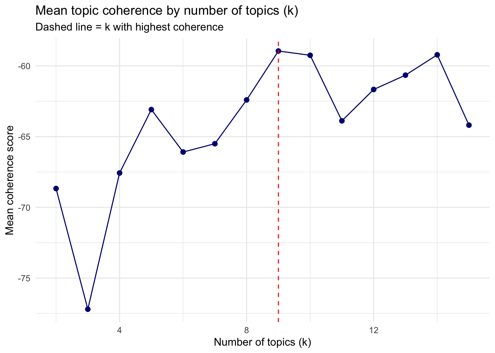
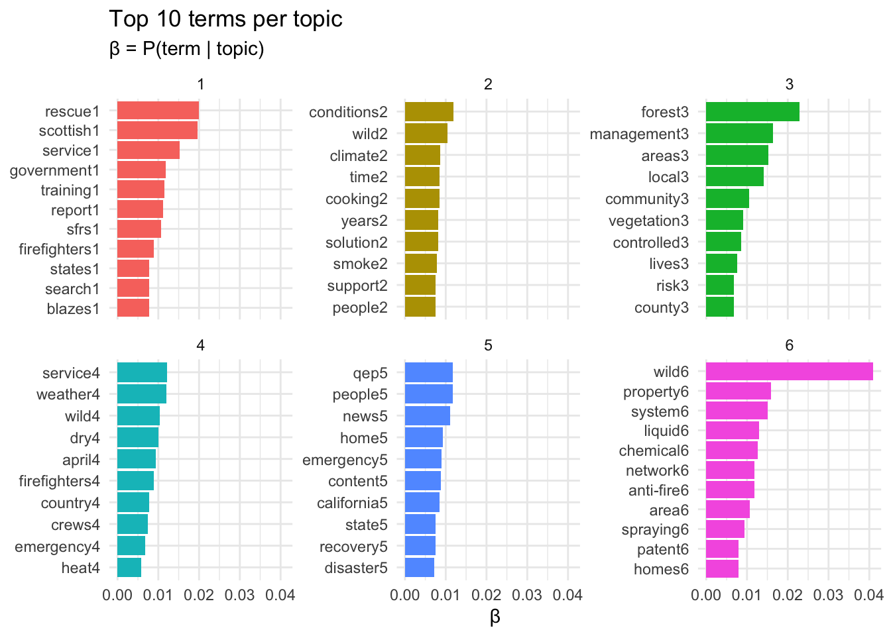
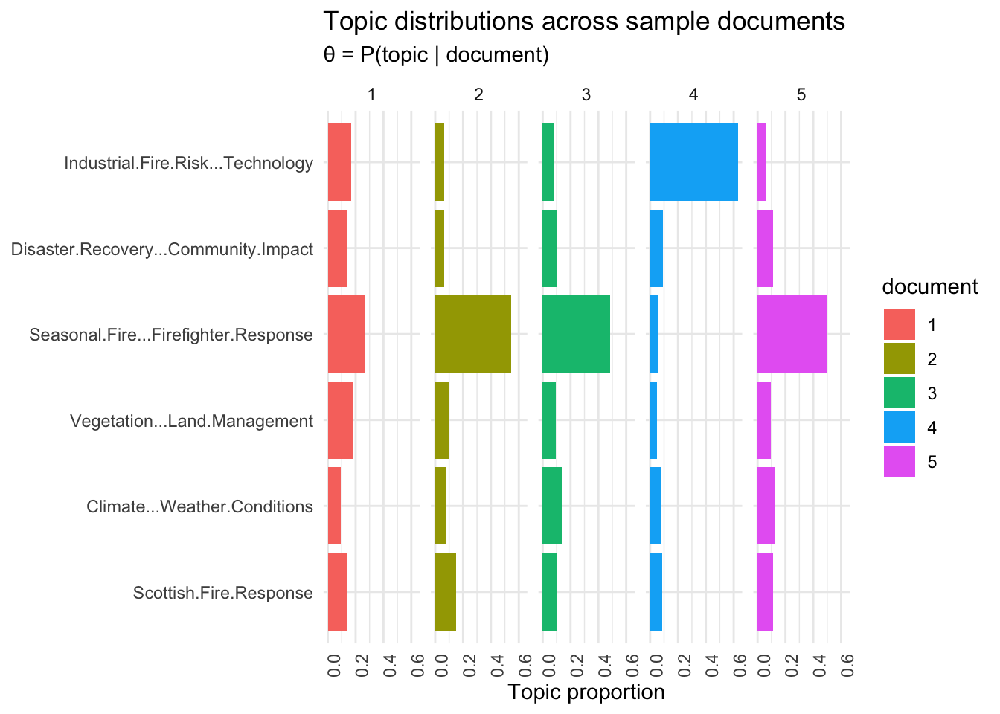

library(LexisNexisTools)
library(quanteda)
library(tm)
library(topicmodels)
library(topicdoc)
library(tidyverse)
library(tidytext)
library(reshape2)
library(tictoc)
library(LDAvis)
library(tsne)
library(servr)
library(slam)Week 6: LDA Topic Modeling with Nexis Uni Data
About the Data
The data for this analysis comes from Nexis Uni, a news database available through the UCSB Library. To collect the articles, I searched the keyword “wild fire” in the News category and selected 100 articles for download in Word (.DOCX) format.
The search was not restricted to a specific country, date range, or news source, so the corpus includes articles from a range of international outlets. This matters for interpreting the topics – because the corpus is global rather than focused on a single region, the model surfaces geographic subthemes such as Scottish fire response or Nigerian fire incidents as separate topics, rather than grouping all articles under one broad wildfire theme.
The final corpus contains 100 articles (as shown in the glimpse() output below).
Background: Latent Dirichlet Allocation
Latent Dirichlet Allocation (LDA) is a method for discovering hidden themes (called topics) in a collection of text documents. Each document is treated as a mix of topics, and each topic is a mix of words. The model works backwards from the words it can see to figure out what topics were likely involved. Understanding the key variables helps interpret the results:
| Symbol | Name | What it means |
|---|---|---|
| α (alpha) | Hyperparameter | Controls how many topics a single document tends to cover. A small value means each document focuses on just one or two topics. Set by the researcher. |
| β (beta) | Hyperparameter | Controls how many words each topic tends to use. A small value means each topic has a tight, focused vocabulary. Set by the researcher. |
| θ (theta) | Document-topic mix | The estimated proportion of each topic in a given document – i.e., how much of document X is about topic Y. Has to be estimated from the data. |
| φ (phi) | Topic-word mix | The estimated probability of each word belonging to a given topic – i.e., how strongly word W is associated with topic T. Called beta in tidytext. Has to be estimated from the data. |
| z | Topic assignment | The hidden topic label attached to each individual word. Connects the document-topic and topic-word distributions. Has to be estimated from the data. |
| w | Observed word | The only thing you actually see. Everything else (z, θ, φ) is estimated from patterns in w. |
How the Model Imagines Text Was Written
LDA assumes that documents were written as follows:
- For each topic t, draw a word distribution φ_t ~ Dirichlet(β)
- For each document m, draw a topic distribution θ_m ~ Dirichlet(α)
- For each word position in that document:
- Draw a topic assignment z ~ Multinomial(θ_m)
- Draw the word w ~ Multinomial(φ_z)
In practice, we only observe the words (w). The model runs this process in reverse to estimate the most likely z, θ, and φ.
The Dirichlet Distribution
The Dirichlet distribution produces probability vectors that sum to 1, ideal for representing mixtures of topics or words. The concentration parameter (α or β) controls how spread out the mixture is:
- Small value (< 1): most probability sits on one or two categories, realistic for most text.
- Large value (> 1): probability is spread evenly across all categories.
- Value = 1: all mixtures are equally likely.
Setup
Load the Data
We use {LexisNexisTools} to parse the Nexis Uni .DOCX export. This package understands the specific formatting Nexis Uni uses and splits the file into separate articles with metadata like date, headline, and source.
# Set path to the Nexis Uni data file
pre_files <- "assignments/data/nexis_uni_wild-fire_data.DOCX"
# Parse the Nexis Uni export into structured slots
pre_dat <- lnt_read(pre_files)
# Extract metadata, article text, and paragraph-level data
pre_meta_df <- pre_dat@meta
pre_articles_df <- pre_dat@articles
pre_paragraphs_df <- pre_dat@paragraphs
# Build a clean data frame with one row per article
tbl <- tibble(
date = pre_meta_df$Date,
headline = pre_meta_df$Headline,
id = pre_meta_df$ID,
text = pre_articles_df$Article,
source = pre_meta_df$Newspaper
)
glimpse(tbl)Rows: 100
Columns: 5
$ date <date> 2026-03-18, 2025-12-31, 2025-12-31, 2026-02-12, 2026-04-10, …
$ headline <chr> "Wild fire razes homes in Kano, sparks safety warning", "27,0…
$ id <int> 1, 2, 3, 4, 5, 6, 7, 8, 9, 10, 11, 12, 13, 14, 15, 16, 17, 18…
$ text <chr> "Link to Image\nA fire outbreak has destroyed parts of three …
$ source <chr> "The Daily Post (Nigeria)", "Daily Mirror", "Daily Mirror", "…Build the Corpus
We convert the data frame into a quanteda corpus object. Each row in tbl becomes one document in the corpus, which LDA will treat as a separate unit when estimating topic mixtures.
corpus <- corpus(x = tbl, text_field = "text")Tokenize and Clean
Before modeling, we need to break the text into individual words (tokens) and remove words that carry no meaningful information about topic differences. We remove standard English stop words, common journalistic filler phrases, and generic wildfire terms. Words like “fire” and “wildfire” appear in nearly every article and would show up at the top of every topic without helping us understand what makes the topics different from each other. We also remove a stray backtick character (`) that can slip through as a tokenization artifact.
# Combine standard stopwords with domain-specific ones
add_stops <- c(quanteda::stopwords("en", source = "smart"),
"said", "says", "told", "according",
"fire", "fires", "wildfire", "wildfires",
"`")
# Tokenize, remove punctuation and numbers, then lowercase
toks <- tokens(corpus, remove_punct = TRUE, remove_numbers = TRUE) %>%
tokens_tolower()
# Remove all stopwords
toks1 <- tokens_select(toks, pattern = add_stops, selection = "remove")Build the Document-Feature Matrix
LDA works on a document-feature matrix (DFM), which counts how many times each word appears in each document. We remove very rare words (appearing in fewer than 2 documents) since they add noise without helping identify shared topics. We also remove any documents that end up empty after trimming.
dfm1 <- dfm(toks1)
# Remove words that appear in fewer than 2 documents
dfm2 <- dfm_trim(dfm1, min_docfreq = 2)
# Remove empty documents -- LDA cannot handle rows with zero tokens
sel_idx <- slam::row_sums(dfm2) > 0
dfm <- dfm2[sel_idx, ]Step 1: Initial Model (Theory-Driven k)
Before using data to choose the number of topics, we start with a theory driven guess. For a wildfire news corpus, we might expect articles to cluster around a few broad themes: emergency response, climate and weather conditions, land management, and property damage. This gives us a starting point of k = 4.
k <- 4
topicModel_k4 <- LDA(dfm,
k,
method = "Gibbs",
control = list(iter = 100,
verbose = 25,
seed = 321))K = 4; V = 2767; M = 100
Sampling 100 iterations!
Iteration 25 ...
Iteration 50 ...
Iteration 75 ...
Iteration 100 ...
Gibbs sampling completed!Inspect the Posterior Distributions
posterior() extracts the two key output matrices:
- theta (θ): document × topic matrix, how much of each document belongs to each topic
- beta/phi (φ): topic × term matrix, how strongly each word is associated with each topic
result <- posterior(topicModel_k4)
beta <- result$terms
theta <- result$topics
cat("phi dimensions (topics x vocab):", dim(beta), "\n")phi dimensions (topics x vocab): 4 2767 cat("theta dimensions (docs x topics):", dim(theta), "\n")theta dimensions (docs x topics): 100 4 # Top 10 terms per topic
terms(topicModel_k4, 10) Topic 1 Topic 2 Topic 3 Topic 4
[1,] "service" "forest" "wild" "wild"
[2,] "rescue" "areas" "property" "area"
[3,] "firefighters" "conditions" "system" "people"
[4,] "scottish" "management" "services" "time"
[5,] "crews" "risk" "liquid" "smoke"
[6,] "incident" "dry" "network" "cooking"
[7,] "training" "community" "chemical" "pizza"
[8,] "report" "county" "anti-fire" "times"
[9,] "government" "april" "qep" "air"
[10,] "response" "year" "information" "site" Looking at the top terms, we can see some early patterns. Topic 1 captures Scottish fire response terms like “rescue” and “scottish”, and Topic 4 shows general and unexpected words like “smoke”, “cooking”, and “pizza”. However, topics are quite mixed overall, for example “cooking” and “pizza” appear in Topic 4 alongside general news terms, while “qep” appears in Topic 3 alongside industrial terms like “liquid” and “chemical”, which are unrelated to each other. This suggests k = 4 is too few to cleanly separate the themes in this 100-article corpus.
Step 2: Selecting k with Coherence Scores
Instead of relying only on theory, we can let the data help us choose k. We fit models for k = 2 through 15 and measure coherence for each. Coherence measures whether the top words in each topic actually appear together in the same articles, a sign that the topic is meaningful and not just a mix of unrelated words.
Higher coherence (closer to 0) = more meaningful topics.
tic()
# Fit one model for each value of k
k_values <- seq(2, 15, by = 1)
coherence_results <- map_dfr(k_values, function(k) {
m <- LDA(dfm, k = k, method = "Gibbs",
control = list(iter = 300,
seed = 321,
verbose = 0))
# Calculate mean coherence score for this k
coh <- mean(topic_coherence(m, dfm))
tibble(k = k, coherence = coh)
})
toc()1.887 sec elapsed# Plot coherence vs k
ggplot(coherence_results, aes(x = k, y = coherence)) +
geom_line(color = "navy") +
geom_point(color = "navy", size = 2) +
geom_vline(xintercept = coherence_results$k[which.max(coherence_results$coherence)],
linetype = "dashed", color = "red") +
labs(title = "Mean topic coherence by number of topics (k)",
subtitle = "Dashed line = k with highest coherence",
x = "Number of topics (k)",
y = "Mean coherence score") +
theme_minimal()
# Full table of coherence scores
coherence_results# A tibble: 14 × 2
k coherence
<dbl> <dbl>
1 2 -68.7
2 3 -77.2
3 4 -67.6
4 5 -63.1
5 6 -66.1
6 7 -65.5
7 8 -62.4
8 9 -59.0
9 10 -59.3
10 11 -63.9
11 12 -61.7
12 13 -60.7
13 14 -59.2
14 15 -64.2Interpreting the plot: Look for the peak coherence value, or an “elbow” where adding more topics stops improving coherence meaningfully. Also inspect the top terms at two or three candidate k values, statistical criteria and human interpretability do not always agree.
The coherence plot peaks at k = 9 (coherence = -59.0). The curve drops sharply from k = 2 to k = 3, then generally improves from k = 3 through k = 9, after which it becomes more variable. However, k = 9 is still more topics than needed for 100 articles and would likely create several near-identical groups.
We proceed with k = 6 as a practical balance. While k = 7 (-65.5), k = 8 (-62.4), and the statistical peak k = 9 (-59.0) all have higher coherence scores than k = 6 (-66.1), at those values topics begin splitting closely related content into subtopics that are difficult to tell apart. At k = 6, each topic has a clean, distinct set of terms that points to a recognizable real-world theme.
Step 3: Fit the Selected Model
We now fit the final model with k = 6, using more iterations (1000) for better convergence than the exploratory model.
k <- 6
topicModel_k_select <- LDA(dfm, k,
method = "Gibbs",
control = list(iter = 1000,
verbose = 25,
seed = 321))K = 6; V = 2767; M = 100
Sampling 1000 iterations!
Iteration 25 ...
Iteration 50 ...
Iteration 75 ...
Iteration 100 ...
Iteration 125 ...
Iteration 150 ...
Iteration 175 ...
Iteration 200 ...
Iteration 225 ...
Iteration 250 ...
Iteration 275 ...
Iteration 300 ...
Iteration 325 ...
Iteration 350 ...
Iteration 375 ...
Iteration 400 ...
Iteration 425 ...
Iteration 450 ...
Iteration 475 ...
Iteration 500 ...
Iteration 525 ...
Iteration 550 ...
Iteration 575 ...
Iteration 600 ...
Iteration 625 ...
Iteration 650 ...
Iteration 675 ...
Iteration 700 ...
Iteration 725 ...
Iteration 750 ...
Iteration 775 ...
Iteration 800 ...
Iteration 825 ...
Iteration 850 ...
Iteration 875 ...
Iteration 900 ...
Iteration 925 ...
Iteration 950 ...
Iteration 975 ...
Iteration 1000 ...
Gibbs sampling completed!# Extract posterior distributions
tmResult <- posterior(topicModel_k_select)
terms(topicModel_k_select, 10) Topic 1 Topic 2 Topic 3 Topic 4 Topic 5
[1,] "rescue" "conditions" "forest" "service" "people"
[2,] "scottish" "wild" "management" "weather" "qep"
[3,] "service" "climate" "areas" "wild" "news"
[4,] "government" "time" "local" "dry" "home"
[5,] "training" "cooking" "community" "april" "emergency"
[6,] "report" "years" "vegetation" "firefighters" "content"
[7,] "sfrs" "solution" "controlled" "country" "california"
[8,] "firefighters" "smoke" "lives" "crews" "state"
[9,] "states" "people" "county" "emergency" "recovery"
[10,] "blazes" "support" "risk" "heat" "disaster"
Topic 6
[1,] "wild"
[2,] "property"
[3,] "system"
[4,] "liquid"
[5,] "chemical"
[6,] "network"
[7,] "anti-fire"
[8,] "area"
[9,] "spraying"
[10,] "homes" theta <- tmResult$topics
beta <- tmResult$terms
vocab <- colnames(beta)Step 4: Visualize Top Terms per Topic
The β (φ) matrix gives us the probability of each word belonging to each topic. Plotting the highest-probability terms for each topic is the main tool for understanding what each topic is actually about.
topics <- tidy(topicModel_k_select, matrix = "beta")
top_terms <- topics |>
group_by(topic) |>
slice_max(beta, n = 10) |>
ungroup() |>
arrange(topic, -beta)
top_terms |>
mutate(term = reorder_within(term, beta, topic, sep = "")) |>
ggplot(aes(term, beta, fill = factor(topic))) +
geom_col(show.legend = FALSE) +
facet_wrap(~ topic, scales = "free_y") +
scale_x_reordered() +
coord_flip() +
labs(title = "Top 10 terms per topic",
subtitle = "β = P(term | topic)",
x = NULL,
y = "β") +
theme_minimal()
Step 5: Name the Topics
We assign a label to each topic based on its top words. This step requires reading the terms and thinking about what real-world theme they point to.
topic_words <- terms(topicModel_k_select, 5)
# Assign a descriptive label to each topic
# Order matches the topic numbering from terms(topicModel_k_select, 10):
# Topic 1: rescue, scottish, service, government, training
# Topic 2: conditions, wild, climate, cooking, years
# Topic 3: forest, management, areas, local, community
# Topic 4: service, weather, wild, dry, april (firefighters, crews, heat)
# Topic 5: people, qep, news, home, emergency
# Topic 6: wild, property, system, liquid, chemical
topic_names <- c(
"Scottish Fire Response",
"Climate & Weather Conditions",
"Vegetation & Land Management",
"Seasonal Fire & Firefighter Response",
"Disaster Recovery & Community Impact",
"Industrial Fire Risk & Technology"
)
topic_names[1] "Scottish Fire Response"
[2] "Climate & Weather Conditions"
[3] "Vegetation & Land Management"
[4] "Seasonal Fire & Firefighter Response"
[5] "Disaster Recovery & Community Impact"
[6] "Industrial Fire Risk & Technology" Step 6: Document-Topic Distributions (θ)
The θ matrix shows what proportion of each document belongs to each topic. A document focused entirely on one theme will have a high θ for that topic and near-zero values for the others. Mixed documents spread their weight across several topics.
# Select the first 5 documents to examine
example_ids <- c(1:5)
n <- length(example_ids)
example_props <- theta[example_ids, ]
colnames(example_props) <- topic_names
viz_df <- melt(cbind(data.frame(example_props),
document = factor(1:n)),
variable.name = "topic",
id.vars = "document")
ggplot(data = viz_df, aes(topic, value, fill = document)) +
geom_bar(stat = "identity") +
theme_minimal() +
theme(axis.text.x = element_text(angle = 90, hjust = 1)) +
coord_flip() +
facet_wrap(~ document, ncol = n) +
labs(title = "Topic distributions across sample documents",
subtitle = "θ = P(topic | document)",
x = NULL,
y = "Topic proportion")
Step 7: Interactive Visualization with LDAvis
LDAvis provides an interactive view of two complementary aspects of the model:
Intertopic distance map: circles represent topics; size = proportion of corpus tokens assigned to that topic; distance = degree of topic overlap in vocabulary
Term relevance bar chart: adjustable by the λ (lambda) parameter
The λ (lambda) Relevance Parameter
λ controls how words are ranked within a topic:
\[\text{Relevance}(w, t) = \lambda \times P(w|t) + (1 - \lambda) \times \frac{P(w|t)}{P(w)}\]
- λ near 1: ranks words by raw frequency within the topic, highlights common words
- λ near 0: ranks words by how exclusive they are to that topic relative to the whole corpus, highlights distinctive words
- λ = 0.6: the recommended starting point (Sievert & Shirley, 2014) that balances both, use this, not the default λ = 1.0
svd_tsne <- function(x) tsne(svd(x)$u)
json <- createJSON(
phi = tmResult$terms,
theta = tmResult$topics,
doc.length = rowSums(dfm),
vocab = colnames(dfm),
term.frequency = colSums(dfm),
mds.method = svd_tsne,
plot.opts = list(xlab = "", ylab = "")
)
if (interactive()) serVis(json)Reading the LDAvis plot: The intertopic distance map shows 6 circles of varying sizes. Topic 2 (Climate and Weather Conditions) and Topic 4 (Seasonal Fire and Firefighter Response) are among the largest circles, meaning they account for the biggest shares of the corpus. Topic 3 (Vegetation and Land Management) sits far to the left, well separated from the rest, which means it uses very different vocabulary from the other topics. Topic 6 (Industrial Fire Risk and Technology) sits near the center of the map. Topics 4 and 5 sit close together in the lower portion of the map, which makes sense since both cover community-level response and locally focused fire content. Topic 1 (Scottish Fire Response) sits near the center-left and is reasonably well separated from the other topics. Overall the separation is good, though the overlap between Topics 4 and 5 suggests those two could potentially be merged.
Interpretation
1. Build and Clean Your Corpus
The corpus was built from 100 Nexis Uni news articles retrieved using the keyword search “wild fire” in the News category, with no geographic or date filters applied. The file nexis_uni_wild-fire_data.DOCX was downloaded for this assignment and parsed using {LexisNexisTools}, covering international outlets.
Custom stop words were added in two groups. First, journalistic filler words (“said”, “says”, “told”, “according”) were removed because they appear across all articles regardless of topic. Second, the words “fire”, “fires”, “wildfire”, and “wildfires” were removed because they appear in nearly every article and would otherwise show up at the top of every topic, making it impossible to see what is actually different between them. A stray backtick character was also added to the stop word list to prevent a punctuation artifact from appearing in the top term lists.
2. Select k Using Multiple Criteria
Theory: A wildfire news corpus covering international outlets is likely to contain articles on emergency response, land management, climate and weather conditions, industrial fire technology, community recovery, and specific geographic events. This suggests somewhere between 5 and 7 topics would capture the main themes across 100 articles.
Optimization Metrics: The coherence plot peaks at k = 9 (coherence = -59.0). The curve drops at k = 3, then improves generally through k = 9 before becoming more variable. k = 9 is still more topics than needed for 100 articles and would likely split closely related content into near-identical groups. While k = 7 (-65.5), k = 8 (-62.4), and the statistical peak k = 9 (-59.0) all score higher than k = 6 (-66.1), at those values topics begin splitting closely related content into subtopics that are hard to tell apart.
Interpretability: At k = 4, topics are broad and contain clearly unrelated terms mixed together, for example “cooking” and “pizza” appear in Topic 4 alongside weather adjacent terms like “smoke”, while “qep” appears in Topic 3 alongside industrial suppression terms like “liquid” and “chemical”. These are unrelated clusters of content that k = 4 fails to separate. At k = 6, each topic has a cleaner set of terms that point to a recognizable theme. At k = 8, some topics would start to split into very similar subtopics.
Justification: k = 6 was selected. The coherence score at k = 6 is -66.1, which is not the highest, but at k = 7, k = 8, and the statistical peak k = 9, topics start splitting into subtopics that are difficult to distinguish from each other in practice. The 6 topics produced are each interpretable and distinct. The LDAvis map shows good separation overall, with the exception of Topics 4 and 5 which sit close together, both covering active fire response and recovery content and are naturally similar themes.
3. Final Model and Top Terms Plot
See Step 4 above, top 10 terms per topic plotted with β weights.
4. Document-Topic Distributions
See Step 6 above, θ distributions across 5 sample documents from the 100-article corpus. Document 4 is dominated by the Industrial Fire Risk and Technology topic, meaning that article focuses almost entirely on fire suppression systems and technical fire-prevention content. Documents 2, 3, and 5 are each dominated by the Seasonal Fire and Firefighter Response topic, pointing to active-fire-season coverage. Document 1 is the most spread across topics, meaning that article touches on several themes within a single piece.
5. Interpret Your Topics
Topic 1: Scottish Fire Response: The top terms are “rescue”, “scottish”, “service”, “government”, “training”, “report”, “sfrs”, “firefighters”, “states”, and “blazes”. This topic covers articles about Scottish fire services, their operations, training programs, government reports, and responses to blazes. “sfrs” refers to the Scottish Fire and Rescue Service. The topic is geographically distinct because Scotland’s fire service operates under its own national structure, which generates a consistent set of terms across multiple articles.
Topic 2: Climate & Weather Conditions: The top terms are “conditions”, “wild”, “climate”, “time”, “cooking”, “years”, “solution”, “smoke”, “people”, and “support”. This topic groups articles that place wildfire in the context of climate and weather, dry conditions, rising temperatures, and seasonal patterns. “cooking” appears here because several articles about the Wild Fire pizza restaurant in Sunderland were pulled into the corpus by the broad search term “wild fire”, those articles have no connection to actual wildfires but share general vocabulary that landed them in this cluster.
Topic 3: Vegetation & Land Management: The top terms are “forest”, “management”, “areas”, “local”, “community”, “vegetation”, “controlled”, “lives”, “county”, and “risk”. This topic covers articles about managing land to reduce wildfire risk, controlled burns, clearing vegetation, protecting local communities and wildlife. It is the most prevention focused topic and deals with what happens before a fire starts rather than during or after.
Topic 4: Seasonal Fire & Firefighter Response: The top terms are “service”, “weather”, “wild”, “dry”, “april”, “firefighters”, “country”, “crews”, “emergency”, and “heat”. This topic groups articles about active fire seasons, crews responding to emergencies during dry spring and summer months. “april” and “dry” suggest several articles focus on the seasonal window when fire risk peaks. It covers frontline response from multiple countries.
Topic 5: Disaster Recovery & Community Impact: The top terms are “people”, “qep”, “news”, “home”, “emergency”, “content”, “california”, “state”, “recovery”, and “disaster”. This topic groups articles about what happens after a wildfire, evacuation, recovery efforts, and community rebuilding. “qep” refers to QEP, a company that donated cleaning supplies to hurricane and wildfire cleanup efforts, which appeared across multiple articles. “california” and “state” point to US-based recovery coverage.
Topic 6: Industrial Fire Risk & Technology: The top terms are “wild”, “property”, “system”, “liquid”, “chemical”, “network”, “anti-fire”, “area”, “spraying”, and “homes”. This topic covers industrial fire suppression technology, chemical spraying systems, anti-fire patents, and property protection networks. It sits near the center of the LDAvis map but uses highly technical and product specific vocabulary that sets it apart from the general wildfire news coverage in the other topics.